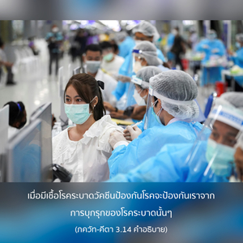

ร่างที่มีชีวิตทั้งหมดนั้นมีชีวิตอยู่ได้ด้วยธัญญาหารซึ่งผลิตมาจากฝน ฝนเป็นผลผลิตจากการปฏิบัติ ยชฺญ (การบูชา) และ ยชฺญ เกิดจากหน้าที่ที่ได้กำหนดไว้

ศฺรีล พลเทว วิทฺยาภูษณ นักเขียนและนักบรรยาย ภควัท-คีตา ผู้ยิ่งใหญ่ได้เขียนดังต่อไปนี้ เย อินฺทฺราทฺยฺ-องฺคตยาวสฺถิตํ ยชฺญํ สเรฺวศฺวรํ วิษฺณุมฺ อภฺยรฺจฺย ตจฺ-เฉษมฺ อศฺนนฺติ เตน ตทฺ เทห-ยาตฺรำ สมฺปาทยนฺติ เต สนฺตห์ สเรฺวศฺวรสฺย ยชฺญ-ปุรุษสฺย ภกฺตาห์ สรฺว-กิลฺพิไษรฺ อนาทิ-กาล-วิวฺฤทฺไธรฺ อาตฺมานุภว-ปฺรติพนฺธไกรฺ นิขิไลห์ ปาไปรฺ วิมุจฺยนฺเต องค์ภควานฺทรงมีพระนามว่า ยชฺญ-ปุรุษ หรือผู้ที่ได้รับผลประโยชน์จากการบูชาทั้งหมด ทรงเป็นเจ้านายของปวงเทวดาผู้ทรงรับใช้พระองค์เสมือนส่วนต่างๆ ของพระวรกายที่รับใช้ทั่วทั้งพระวรกายเทวดา เช่น พระอินทร์ (อินฺทฺร) พระจันทร์ (จนฺทฺร) และพระวรุณ ทรงเป็นเจ้าหน้าที่ที่ได้รับการแต่งตั้งให้บริหารภารกิจในโลกวัตถุ คัมภีร์พระเวทได้แนะนำการบูชาเทวดาเพื่อให้เทพเหล่านี้ทรงได้รับความพึงพอพระทัยและยินดีจัดส่งลม แสง และน้ำให้เพียงพอในการผลิตธัญญาหาร เมื่อองค์ศฺรี กฺฤษฺณได้รับการบูชามวลเทวดาที่เปรียบเสมือนส่วนต่างๆ ของพระวรกายขององค์ภควานฺก็ทรงได้รับการบูชาโดยปริยายเช่นเดียวกัน ดังนั้น จึงไม่มีความจำเป็นต้องบูชาเหล่าเทวดาอีกต่างหาก ด้วยเหตุนี้สาวกผู้อยู่ในกฺฤษฺณจิตสำนึกจึงถวายเครื่องเสวยแด่องค์กฺฤษฺณก่อนแล้วตนเองจึงค่อยรับประทาน ซึ่งเป็นวิธีการบำรุงรักษาร่างทิพย์ การปฏิบัติเช่นนี้ไม่เพียงแต่ผลบาปของร่างกายในอดีตถูกชะล้างไป แต่ร่างกายยังได้รับเชื้อวัคซีนป้องกันมลพิษทั้งมวลจากธรรมชาติวัตถุ เมื่อมีเชื้อโรคระบาดวัคซีนป้องกันโรคจะป้องกันเราจากการบุกรุกของโรคระบาดนั้นๆ เครื่องเสวยที่ถวายให้พระวิษฺณุและเรานำมารับประทานก็เช่นเดียวกัน จะทำให้เรามีภูมิต้านทานเชื้อโรคทางวัตถุอย่างเพียงพอ ผู้ที่เคยชินต่อการปฎิบัติเช่นนี้เรียกว่า สาวกขององค์ภควานฺ ดังนั้น บุคคลที่อยู่ในกฺฤษฺณจิตสำนึกจึงรับประทานแต่อาหารที่ถวายแด่องค์กฺฤษฺณแล้ว สิ่งนี้สามารถต่อต้านผลกรรมทั้งมวลจากเชื้อโรคทางวัตถุในอดีต ซึ่งเป็นอุปสรรคต่อความเจริญก้าวหน้าในการรู้แจ้งตนเอง ขณะเดียวกันบุคคลที่ไม่ทำเช่นนี้จะเพิ่มพูนการกระทำบาปให้มากยิ่งๆ ขึ้นไป และจะเตรียมร่างต่อไปที่เหมือนกับสุกรและสุนัขเพื่อรับกรรมจากผลบาปทั้งหมด โลกวัตถุเต็มไปด้วยมลพิษ และผู้ที่ได้ฉีดวัคซีนป้องกันด้วยการรับประทานพระสาดัมขององค์ภควานฺ (เครื่องเสวยที่ถวายให้พระวิษฺณุแล้ว) จะได้รับความปลอดภัยจากการบุกรุก ผู้ไม่ทำเช่นนี้ต้องได้รับมลพิษอย่างแน่นอน
ธัญพืชหรือผักเป็นอาหารที่ควรรับประทาน มนุษย์รับประทานข้าว ผัก และผลไม้ต่างๆ สัตว์กินกากอาหารจากข้าวและผัก กินหญ้า กินพืช ฯลฯ มนุษย์ผู้เคยชินกับการรับประทานเนื้อสัตว์ต้องขึ้นอยู่กับผลผลิตของพืชพันธุ์ธัญญาหารเช่นกันถึงจะกินสัตว์ได้ ดังนั้นในที่สุดเราจะต้องขึ้นอยู่กับผลผลิตของไร่นาไม่ใช่ผลผลิตจากโรงงานอุตสาหกรรมใหญ่โต ผลผลิตจากไร่นามาจากฝนที่ตกลงมาจากฟากฟ้าอย่างเพียงพอ และฝนนี้เหล่าเทวดา เช่น พระอินทร์ พระอาทิตย์ พระจันทร์ ฯลฯ ทรงเป็นผู้ควบคุม และเทวดาทั้งหมดนี้ทรงเป็นผู้รับใช้ขององค์ภควานฺ พระองค์ทรงได้รับความพึงพอพระทัยจากการบูชา ดังนั้น ผู้ที่ไม่สามารถปฏิบัติการบูชาจะพบว่าตนเองอยู่ในสภาวะขาดแคลน นี่คือกฎแห่งธรรมชาติ ยชฺญ โดยเฉพาะ สงฺกีรฺตน-ยชฺญ ได้กำหนดไว้สำหรับยุคนี้จะต้องปฏิบัติเพื่อคุ้มครองเรา ซึ่งอย่างน้อยที่สุดก็ปกป้องเราจากการขาดแคลนอาหาร